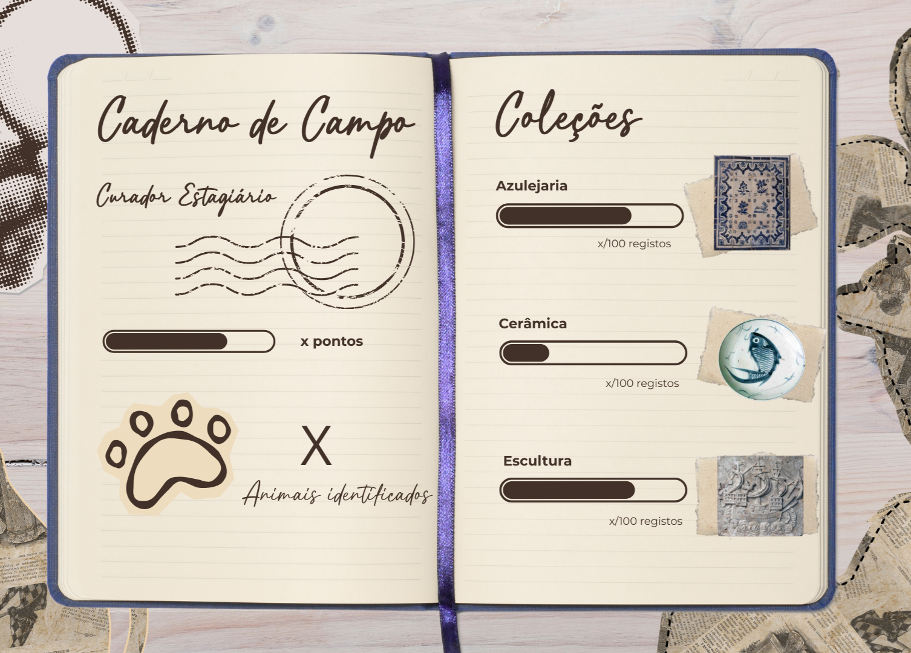
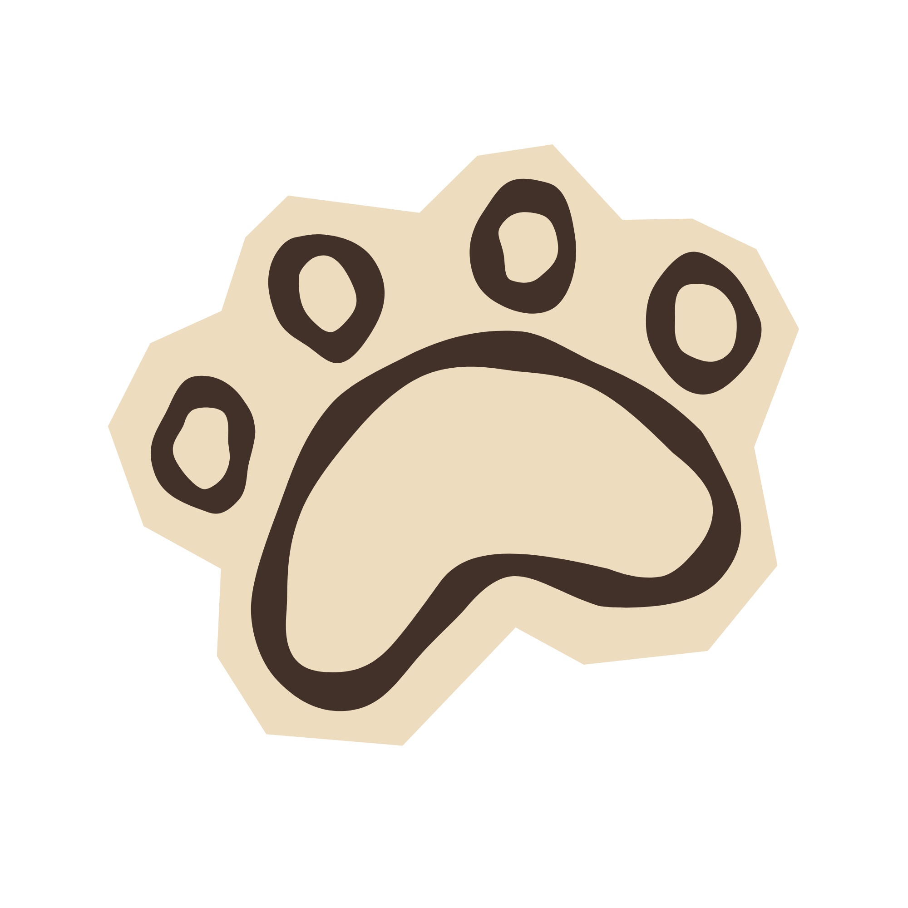
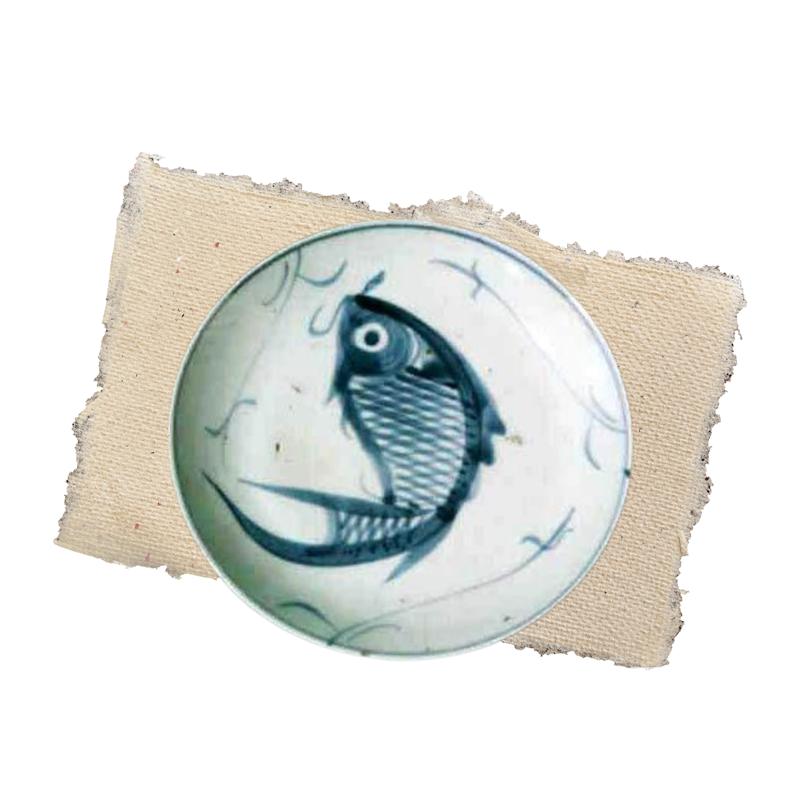

TAG ANIMALx
Ajuda-nos a descobrir os animais nas representações do Museu de Lisboa!
O PROJETO
Bem-vindo ao Tag ANIMALx! Como sabemos, os animais estão por toda a parte da história de Lisboa. Nesta iniciativa de Ciência Cidadã, os utilizadores podem ajudar a equipa do projeto Animais de Lisboa (ANIMALx) a identificar os animais presentes nos objetos e representações na coleção do Museu de Lisboa.
DISCLAIMER: O software do Tag ANIMALx ainda está em desenvolvimento. Neste momento ainda não conseguimos guardar os pontos de cada sessão, para registar o progresso dos jogadores. No entanto, podes tirar uma foto e partilhar com a #TagANIMALx, a equipa do projeto estará atenta às redes sociais!
Primeiro Passo: Regista-te como Investigador ANIMALx!
A nossa base de dados está a crescer graças à tua ajuda, e todas as descobertas merecem ser reconhecidas!
Queres que o teu nome fique para sempre associado aos animais que ajudares a catalogar nas coleções do Museu de Lisboa?
Ao criares o teu perfil de Investigador ANIMALx, o teu trabalho ganha uma assinatura. Assim, quando os especialistas receberem os teus registos validados, saberão exatamente quem foi o detetive responsável por essa descoberta.

Como em qualquer arquivo oficial, temos regras importantes de segurança e privacidade.
Para guardarmos o teu nome e associarmos as tuas descobertas ao teu perfil, precisamos da tua autorização (ou da de um adulto, se fores mais novo).
PERGUNTA 1 – Há algum animal na imagem?
Caderno de Campo
Curador Estagiário


Coleções
Azulejaria
75/100 registos
Cerâmica
30/100 registos
Escultura
60/100 registos

Desenho
20/100 registos
Pintura
45/100 registos